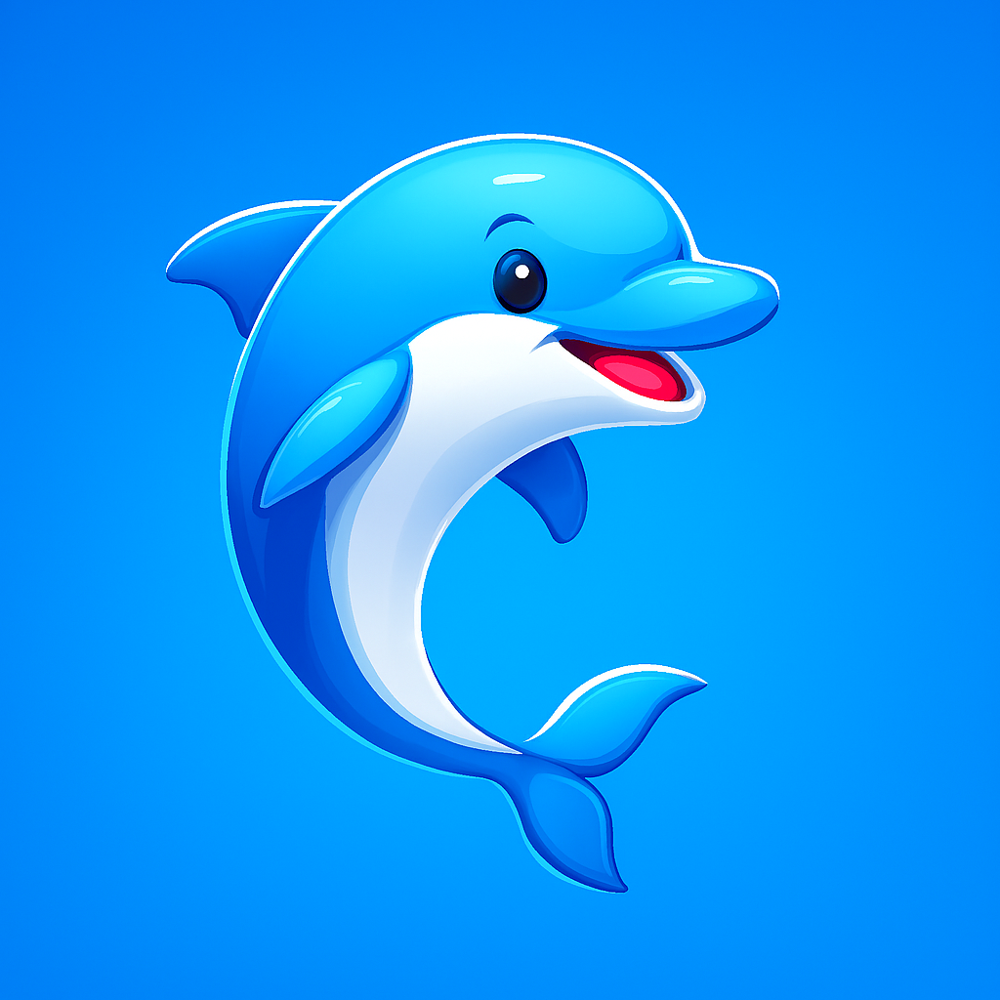

Muito prazer, nós somos o Ondo! 🐬
Bem-vindo à página oficial do seu novo parceiro de aprendizado de idiomas. O aplicativo foi criado para tornar o estudo de inglês e espanhol muito mais prático e inteligente.
Navegue pelo menu lateral para conhecer nossos módulos de história, entender como funciona a nossa prática guiada e descobrir como o nosso sistema avalia a profundidade e a coerência das suas respostas para garantir um aprendizado real.